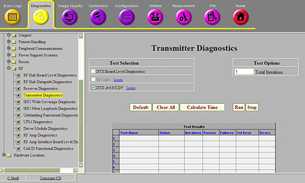
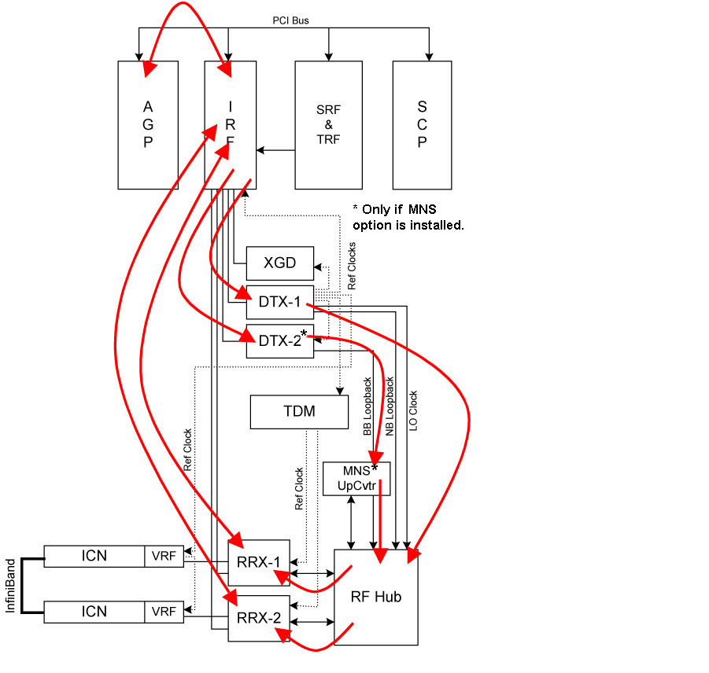

Operating Documentation
Direction 5500113, Rev# 3
Discovery MR750 3.0T Service Methods
Module Version 3.0, Version Date 11/4/09
Operating Documentation |
Diagnostics >> System Function >> RF >> Transmitter Diagnostics
Diagnostics >> Hardware Location >> Pen Panel Cabinet >> Transmitter Diagnostics
Illustration 1: DTX to RRX Data Path

The DTX to RRX data path diagnostic tests the analog signal quality and filter response of the DTX, RF hub, and RRX modules. This is the only diagnostic that tests the signal quality of the Exciter output and the RF Hub analog signal paths. This loops the DTX signal through the RF Hub Receiver Chain.
The signal quality is tested for each of the following:
Narrowband Exciter Output - DTX1
MNS Exciter Output - DTX2 (if MNS option is installed)
RF Hub Switch Boards
MNS Up Converter (if MNS option is installed)
Receiver Modules
This diagnostic should not be run until after the IRF3 BLD, DTX BLD, RRX BLD, RF Hub BLD, and RF Calib diagnostics were run and passed. If the RRX BLD passes and the DTX to RRX DP fails, the fault is in either the DTX or the RF Hub. Since the same DTX signal is sent to all RRX input channels, if the DTX to RRX DP fails for only some channels, the fault is likely to be in the RF Hub Switch Boards.
Illustration 2: Block Diagram

The narrowband and broadband (if installed) data paths are tested separately. The narrowband path is tested over the normal range of proton frequencies. The broadband path is tested at proton frequencies and over several MNS frequencies.
For the narrowband tests, the DTX-1 is programmed to send a signal through a cable connected to the control board of the RF Hub. The control board routes this signal to each switch board in the RF Hub. The switch boards send the DTX-1’s signal to each input channel of each RRX module. The RRX modules are commanded to digitize the DTX-1’s signal and send the data directly to the IRF3. The AGP analyzes the signals captured by the RRX modules and creates a log file with the results: /usr/g/service/log/dtxRrx_loopback_<date>.log
| NOTE: | The ICNs are not used in this diagnostic. |
For the broadband tests, the DTX-2 is programmed to send a signal through a cable connected to the MNS up converter located outside of the RF Hub. The up converter forwards the DTX-2 signal to the first 8 input channels of the first switch board. The first switch board forwards the DTX-2’s signal to 8 of the RRX module’s input channels. The RRX modules are commanded to digitize the DTX-2’s signal and send the data directly to the IRF3. The AGP analyzes the signals captured by the RRX modules and creates a log file with the results: /usr/g/service/log/dtxRrx_mns_loopback_<date>.log.
| NOTE: | The ICNs are not used in this diagnostic. |
The diagnostic passes.